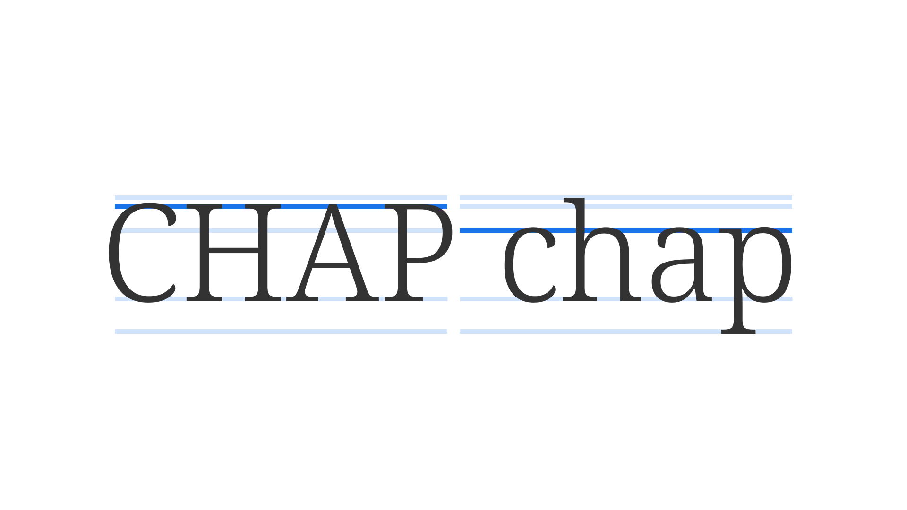

Uppercase & lowercase
By Google Fonts Knowledge contributors · Google Fonts Knowledge.
Original article · Source on GitHub · CC BY-SA 4.0. Text, illustrations and existing credits reproduced from the licensed Knowledge repository. Open Shelf adapted the layout and links; these adaptations are also CC BY-SA 4.0. No endorsement implied.
Writing systems that use uppercase and lowercase sets have characters with equivalents in each set. Uppercase (or capital) letters—the larger of the two— are used for the beginning of sentences, proper nouns, and abbreviations. They can also be used for purely aesthetic purposes, such as in display signage. Lowercase letters are used for every other scenario.

The original version of the Latin alphabet contained only uppercase forms. Lowercase letters were based on cursive handwritten forms.
When spacing uppercase text, especially at small sizes, it’s usually beneficial to aid readability by applying more open tracking (letter-spacing). To transform between uppercase and lowercase, many applications and word processors have built-in options; in CSS, it’s achieved using text-transform.